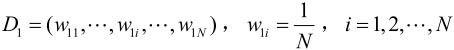
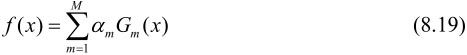
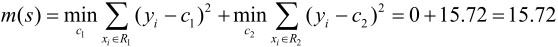
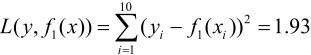
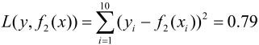

＝{-1,+1}，x是实例空间，是标记集合。AdaBoost利用以下算法，从训练数据中学习一系列弱分类器或基本分类器，并将这些弱分类器线性组合成为一个强分类器。
＝{-1,+1}，x是实例空间，是标记集合。AdaBoost利用以下算法，从训练数据中学习一系列弱分类器或基本分类器，并将这些弱分类器线性组合成为一个强分类器。第8章 提升方法
提升（boosting）方法是一种常用的统计学习方法，应用广泛且有效。在分类问题中，它通过改变训练样本的权重，学习多个分类器，并将这些分类器进行线性组合，提高分类的性能。
本章首先介绍提升方法的思路和代表性的提升算法AdaBoost；然后通过训练误差分析探讨AdaBoost为什么能够提高学习精度；并且从前向分步加法模型的角度解释AdaBoost；最后叙述提升方法更具体的实例——提升树（boosting tree）。AdaBoost算法是1995年由Freund和Schapire提出的，提升树是2000年由Friedman等人提出的。
8.1 提升方法AdaBoost算法
8.1.1 提升方法的基本思路
提升方法基于这样一种思想：对于一个复杂任务来说，将多个专家的判断进行适当的综合所得出的判断，要比其中任何一个专家单独的判断好。实际上，就是“三个臭皮匠顶个诸葛亮”的道理。
历史上，Kearns和Valiant首先提出了“强可学习（strongly learnable）”和“弱可学习（weakly learnable）”的概念。指出：在概率近似正确（probably approximately correct，PAC）学习的框架中，一个概念（一个类），如果存在一个多项式的学习算法能够学习它，并且正确率很高，那么就称这个概念是强可学习的；一个概念，如果存在一个多项式的学习算法能够学习它，学习的正确率仅比随机猜测略好，那么就称这个概念是弱可学习的。非常有趣的是Schapire后来证明强可学习与弱可学习是等价的，也就是说，在PAC学习的框架下，一个概念是强可学习的充分必要条件是这个概念是弱可学习的。
这样一来，问题便成为，在学习中，如果已经发现了“弱学习算法”，那么能否将它提升（boost）为“强学习算法”。大家知道，发现弱学习算法通常要比发现强学习算法容易得多。那么如何具体实施提升，便成为开发提升方法时所要解决的问题。关于提升方法的研究很多，有很多算法被提出。最具代表性的是AdaBoost算法（AdaBoost algorithm）。
对于分类问题而言，给定一个训练样本集，求比较粗糙的分类规则（弱分类器）要比求精确的分类规则（强分类器）容易得多。提升方法就是从弱学习算法出发，反复学习，得到一系列弱分类器（又称为基本分类器），然后组合这些弱分类器，构成一个强分类器。大多数的提升方法都是改变训练数据的概率分布（训练数据的权值分布），针对不同的训练数据分布调用弱学习算法学习一系列弱分类器。
这样，对提升方法来说，有两个问题需要回答：一是在每一轮如何改变训练数据的权值或概率分布；二是如何将弱分类器组合成一个强分类器。关于第1个问题，AdaBoost的做法是，提高那些被前一轮弱分类器错误分类样本的权值，而降低那些被正确分类样本的权值。这样一来，那些没有得到正确分类的数据，由于其权值的加大而受到后一轮的弱分类器的更大关注。于是，分类问题被一系列的弱分类器“分而治之”。至于第2个问题，即弱分类器的组合，AdaBoost采取加权多数表决的方法。具体地，加大分类误差率小的弱分类器的权值，使其在表决中起较大的作用，减小分类误差率大的弱分类器的权值，使其在表决中起较小的作用。
AdaBoost的巧妙之处就在于它将这些想法自然且有效地实现在一种算法里。
8.1.2 AdaBoost算法
现在叙述AdaBoost算法。假设给定一个二类分类的训练数据集
其中，每个样本点由实例与标记组成。实例xi∊x⊆Rn，标记yi∊＝{-1,+1}，x是实例空间，是标记集合。AdaBoost利用以下算法，从训练数据中学习一系列弱分类器或基本分类器，并将这些弱分类器线性组合成为一个强分类器。
算法8.1（AdaBoost）
输入：训练数据集T＝{(x1，y1),(x2，y2),…,(xN,yN)}，其中xi∊x⊆Rn，yi∊＝{-1,+1}；弱学习算法；
输出：最终分类器G(x)。
（1）初始化训练数据的权值分布

（2）对M＝1,2,…,m
（a）使用具有权值分布Dm的训练数据集学习，得到基本分类器
（b）计算Gm(x)在训练数据集上的分类误差率
（c）计算Gm(x)的系数
这里的对数是自然对数。
（d）更新训练数据集的权值分布
这里，Zm是规范化因子
它使Dm+1成为一个概率分布。
（3）构建基本分类器的线性组合
得到最终分类器
对AdaBoost算法作如下说明：
步骤（1） 假设训练数据集具有均匀的权值分布，即每个训练样本在基本分类器的学习中作用相同，这一假设保证第1步能够在原始数据上学习基本分类器G1(x)。
步骤（2） AdaBoost反复学习基本分类器，在每一轮m＝1,2,…,M顺次地执行下列操作：
（a）使用当前分布Dm加权的训练数据集，学习基本分类器Gm(x)。
（b）计算基本分类器Gm(x)在加权训练数据集上的分类误差率：
这里，wmi表示第m轮中第i个实例的权值， 。这表明，Gm(x)在加权的训练数据集上的分类误差率是被Gm(x)误分类样本的权值之和，由此可以看出数据权值分布Dm与基本分类器Gm(x)的分类误差率的关系。
。这表明，Gm(x)在加权的训练数据集上的分类误差率是被Gm(x)误分类样本的权值之和，由此可以看出数据权值分布Dm与基本分类器Gm(x)的分类误差率的关系。
（c）计算基本分类器Gm(x)的系数am。am表示Gm(x)在最终分类器中的重要性。由式（8.2）可知，当em≤时，am≥0，并且am随着em的减小而增大，所以分类误差率越小的基本分类器在最终分类器中的作用越大。
（d）更新训练数据的权值分布为下一轮作准备。式（8.4）可以写成：

由此可知，被基本分类器Gm(x)误分类样本的权值得以扩大，而被正确分类样本的权值却得以缩小。两相比较，误分类样本的权值被放大倍。因此，误分类样本在下一轮学习中起更大的作用。不改变所给的训练数据，而不断改变训练数据权值的分布，使得训练数据在基本分类器的学习中起不同的作用，这是AdaBoost的一个特点。
步骤（3） 线性组合f(x)实现M个基本分类器的加权表决。系数am表示了基本分类器Gm(x)的重要性，这里，所有am之和并不为1.f(x)的符号决定实例x的类，f(x)的绝对值表示分类的确信度。利用基本分类器的线性组合构建最终分类器是AdaBoost的另一特点。
8.1.3 AdaBoost的例子[1]
例8.1 给定如表8.1所示训练数据。假设弱分类器由x<v或x>v产生，其阈值v使该分类器在训练数据集上分类误差率最低。试用AdaBoost算法学习一个强分类器。
表8.1 训练数据表
解 初始化数据权值分布
对m＝1，
（a）在权值分布为D1的训练数据上，阈值v取2.5时分类误差率最低，故基本分类器为
（b）G1(x)在训练数据集上的误差率e1＝P(G1(xi)≠yi)＝0.3。
（c）计算G1(x)的系数：。
（d）更新训练数据的权值分布：
分类器sign[f1(x)]在训练数据集上有3个误分类点。
对m＝2，
（a）在权值分布为D2的训练数据上，阈值v是8.5时分类误差率最低，基本分类器为
（b）G2(x)在训练数据集上的误差率e2＝0.2143。
（c）计算a2＝0.6496。
（d）更新训练数据权值分布：
分类器sign[f2(x)]在训练数据集上有3个误分类点。
对m＝3，
（a）在权值分布为D3的训练数据上，阈值v是5.5时分类误差率最低，基本分类器为
（b）G3(x)在训练样本集上的误差率e3＝0.1820。
（c）计算a3＝0.7514。
（d）更新训练数据的权值分布：
D4＝(0.125,0.125,0.125,0.102,0.102,0.102,0.065,0.065,0.065,0.125)
于是得到：
分类器sign[f3(x)]在训练数据集上误分类点个数为0。
于是最终分类器为
8.2 AdaBoost算法的训练误差分析
AdaBoost最基本的性质是它能在学习过程中不断减少训练误差，即在训练数据集上的分类误差率。关于这个问题有下面的定理：
定理8.1（AdaBoost的训练误差界） AdaBoost算法最终分类器的训练误差界为
这里,G(x),f(x)和Zm分别由式（8.7）、式（8.6）和式（8.5）给出。
证明 当G(xi)≠yi时，yif(xi)<0，因而exp(-yif(xi))≥1。由此直接推导出前半部分。
后半部分的推导要用到Zm的定义式（8.5）及式（8.4）的变形：
现推导如下：
这一定理说明，可以在每一轮选取适当的Gm使得Zm最小，从而使训练误差下降最快。对二类分类问题，有如下结果：
定理8.2（二类分类问题AdaBoost的训练误差界）
这里， m＝-em。
m＝-em。
证明 由Zm的定义式（8.5）及式（8.8）得
至于不等式
则可先由ex和在点x＝0的泰勒展开式推出不等式进而得到。
推论8.1 如果存在>0，对所有m有m≥，则
这表明在此条件下AdaBoost的训练误差是以指数速率下降的。这一性质当然是很有吸引力的。
注意，AdaBoost算法不需要知道下界·。这正是Freund与Schapire设计AdaBoost时所考虑的。与一些早期的提升方法不同，AdaBoost具有适应性，即它能适应弱分类器各自的训练误差率。这也是它的名称（适应的提升）的由来，Ada是Adaptive的简写。
8.3 AdaBoost算法的解释
AdaBoost算法还有另一个解释，即可以认为AdaBoost算法是模型为加法模型、损失函数为指数函数、学习算法为前向分步算法时的二类分类学习方法。
8.3.1 前向分步算法
考虑加法模型（additive model）
其中，b(x;m)为基函数，m为基函数的参数，βm为基函数的系数。显然，式（8.6）是一个加法模型。
在给定训练数据及损失函数L(Y,f(X))的条件下，学习加法模型f(x)成为经验风险极小化即损失函数极小化问题：
通常这是一个复杂的优化问题。前向分步算法（forward stagewise algorithm）求解这一优化问题的想法是：因为学习的是加法模型，如果能够从前向后，每一步只学习一个基函数及其系数，逐步逼近优化目标函数式（8.14），那么就可以简化优化的复杂度。具体地，每步只需优化如下损失函数：
给定训练数据集T＝{(x1，y1),(x2，y2),…,(xN,yN)},xi∊x⊆Rn,yi∊＝{-1,+1}。损失函数L(Y,f(X))和基函数的集合{b(x;)}，学习加法模型f(x)的前向分步算法如下：
算法8.2（前向分步算法）
输入：训练数据集T＝{(x1，y1),(x2，y2),…,(xN,yN)}；损失函数L(Y,f(X))；基函数集{b(x;)}；
输出：加法模型f(x)。
（1）初始化f0(x)＝0
（2）对m＝1,2,…,M
（a）极小化损失函数
得到参数βm，m
（b）更新
（3）得到加法模型
这样，前向分步算法将同时求解从m＝1到M所有参数βm，m的优化问题简化为逐次求解各个βm，m的优化问题。
8.3.2 前向分步算法与AdaBoost
由前向分步算法可以推导出AdaBoost，用定理叙述这一关系。
定理8.3 AdaBoost算法是前向分歩加法算法的特例。这时，模型是由基本分类器组成的加法模型，损失函数是指数函数。
证明 前向分步算法学习的是加法模型，当基函数为基本分类器时，该加法模型等价于AdaBoost的最终分类器

由基本分类器Gm(x)及其系数am组成，m＝1,2,…,M。前向分步算法逐一学习基函数，这一过程与AdaBoost算法逐一学习基本分类器的过程一致。下面证明前向分步算法的损失函数是指数损失函数（exponential loss function）
时，其学习的具体操作等价于AdaBoost算法学习的具体操作。
假设经过m-1轮迭代前向分步算法已经得到fm-1(x)：
在第m轮迭代得到am，Gm(x)和fm(x)。
目标是使前向分步算法得到的am和Gm(x)使fm(x)在训练数据集T上的指数损失最小，即

式（8.20）可以表示为
其中，＝exp[-yifm-1(xi)]。因为既不依赖a也不依赖于G，所以与最小化无关。但依赖于fm-1(x)，随着每一轮迭代而发生改变。
现证使式（8.21）达到最小的和就是AdaBoost算法所得到的am和Gm(x)。求解式（8.21）可分两步：
首先，求。对任意a>0，使式（8.21）最小的G(x)由下式得到：
其中，＝exp[-yi fm-1(xi)]。
此分类器即为AdaBoost算法的基本分类器Gm(x)，因为它是使第m轮加权训练数据分类误差率最小的基本分类器。
之后，求。参照式（8.11），式（8.21）中

将已求得的(x)代入式（8.22），对a求导并使导数为0，即得到使式（8.21）最小的a。
其中，em是分类误差率：
这里的与AdaBoost算法第2(c)步的am完全一致。
最后来看每一轮样本权值的更新。由
以及＝exp[-yi fm-1(xi)]，可得
这与AdaBoost算法第2(d)步的样本权值的更新，只相差规范化因子，因而等价。
8.4 提升树
提升树是以分类树或回归树为基本分类器的提升方法。提升树被认为是统计学习中性能最好的方法之一。
8.4.1 提升树模型
提升方法实际采用加法模型（即基函数的线性组合）与前向分步算法。以决策树为基函数的提升方法称为提升树（boosting tree）。对分类问题决策树是二叉分类树，对回归问题决策树是二叉回归树。在例8.1中看到的基本分类器x<v或x>v，可以看作是由一个根结点直接连接两个叶结点的简单决策树，即所谓的决策树桩（decision stump）。提升树模型可以表示为决策树的加法模型：
其中，T(x;Θm)表示决策树；Θm为决策树的参数；M为树的个数。
8.4.2 提升树算法
提升树算法采用前向分步算法。首先确定初始提升树f0(x)＝0，第m歩的模型是
其中，fm-1(x)为当前模型，通过经验风险极小化确定下一棵决策树的参数Θm，
由于树的线性组合可以很好地拟合训练数据，即使数据中的输入与输出之间的关系很复杂也是如此，所以提升树是一个高功能的学习算法。
下面讨论针对不同问题的提升树学习算法，其主要区别在于使用的损失函数不同。包括用平方误差损失函数的回归问题，用指数损失函数的分类问题，以及用一般损失函数的一般决策问题。
对于二类分类问题，提升树算法只需将AdaBoost算法8.1中的基本分类器限制为二类分类树即可，可以说这时的提升树算法是AdaBoost算法的特殊情况，这里不再细述。下面叙述回归问题的提升树。
已知一个训练数据集T＝{(x1，y1),(x2,y2),…,(xN,yN)}，xi∊x⊆Rn，x为输入空间，yi∊⊆R，为输出空间。在5.5节中已经讨论了回归树的问题。如果将输入空间x划分为J个互不相交的区域R1,R2,…,RJ，并且在每个区域上确定输出的常量cj，那么树可表示为
其中，参数Θ＝{(R1,c1),(R2,c2),…,(RJ,cJ)}表示树的区域划分和各区域上的常数。J是回归树的复杂度即叶结点个数。
回归问题提升树使用以下前向分步算法：
在前向分步算法的第m步，给定当前模型fm-1(x)，需求解
得到m，即第m棵树的参数。
当采用平方误差损失函数时，

其损失变为
这里，
是当前模型拟合数据的残差（residual）。所以，对回归问题的提升树算法来说，只需简单地拟合当前模型的残差。这样，算法是相当简单的。现将回归问题的提升树算法叙述如下。
算法8.3（回归问题的提升树算法）
输入：训练数据集T＝{(x1，y1),(x2,y2),…,(xN,yN)}，xi∊x⊆Rn，yi∊⊆R；
输出：提升树fM(x)。
（1）初始化f0(x)＝0
（2）对m＝1,2,…,M
（a）按式（8.27）计算残差
（b）拟合残差rmi学习一个回归树，得到T(x ;Θm)
（c）更新fm(x)＝fm-1(x)+T(x ;Θm)
（3）得到回归问题提升树
例8.2 已知如表8.2所示的训练数据，x的取值范围为区间[0.5,10.5]，y的取值范围为区间[5.0,10.0]，学习这个回归问题的提升树模型，考虑只用树桩作为基函数。
表8.2 训练数据表
解 按照算法8.3，第1步求f1(x)即回归树T1(x)。
首先通过以下优化问题：
求解训练数据的切分点s：
容易求得在R1，R2内部使平方损失误差达到最小值的c1，c2为
这里N1，N2是R1，R2的样本点数。
求训练数据的切分点。根据所给数据，考虑如下切分点：
1.5，2.5，3.5，4.5，5.5，6.5，7.5，8.5，9.5
对各切分点，不难求出相应的R1，R2，c1，c2及
例如，当s＝1.5时，R1＝{1}，R2＝{2,3,…,10}，c1＝5.56，c2＝7.50，

现将s及m(s)的计算结果列表如下（见表8.3）。
表8.3 计算数据表
由表8.3可知，当s＝6.5时m(s)达到最小值，此时R1＝{1,2,…,6}，R2＝ {7,8,9,10}，c1＝6.24，c2＝8.91，所以回归树T1(x)为

用f1(x)拟合训练数据的残差见表8.4，表中r2i＝yi-f1(xi)，i＝1,2,…,10。
表8.4 残差表
用f1(x)拟合训练数据的平方损失误差：

第2步求T2(x)。方法与求T1(x)一样，只是拟合的数据是表8.4的残差。可以得到：
用f2(x)拟合训练数据的平方损失误差是

继续求得
用f6(x)拟合训练数据的平方损失误差是
假设此时已满足误差要求，那么f(x)＝f6(x)即为所求提升树。
8.4.3 梯度提升
提升树利用加法模型与前向分歩算法实现学习的优化过程。当损失函数是平方损失和指数损失函数时，每一步优化是很简单的。但对一般损失函数而言，往往每一步优化并不那么容易。针对这一问题，Freidman提出了梯度提升（gradient boosting）算法。这是利用最速下降法的近似方法，其关键是利用损失函数的负梯度在当前模型的值

作为回归问题提升树算法中的残差的近似值，拟合一个回归树。
算法8.4（梯度提升算法）
输入：训练数据集T＝{(x1，y1),(x2,y2),…,(xN,yN)}，xi∊x⊆Rn，yi∊⊆R；损失函数L(Y,f(X))；
输出：回归树(x)。
（1）初始化
（2）对m＝1,2,…,M
（a）对i＝1,2,…,N，计算
（b）对rmi拟合一个回归树，得到第m棵树的叶结点区域Rmj，j＝1,2,…,J
（c）对j＝1,2,…,J，计算
（d）更新
（3）得到回归树
算法第1步初始化，估计使损失函数极小化的常数值，它是只有一个根结点的树。第2(a)步计算损失函数的负梯度在当前模型的值，将它作为残差的估计。对于平方损失函数，它就是通常所说的残差；对于一般损失函数，它就是残差的近似值。第2(b)步估计回归树叶结点区域，以拟合残差的近似值。第2(c)步利用线性搜索估计叶结点区域的值，使损失函数极小化。第2(d)步更新回归树。第3步得到输出的最终模型(X)。
本章概要
1．提升方法是将弱学习算法提升为强学习算法的统计学习方法。在分类学习中，提升方法通过反复修改训练数据的权值分布，构建一系列基本分类器（弱分类器），并将这些基本分类器线性组合，构成一个强分类器。代表性的提升方法是AdaBoost算法。
AdaBoost模型是弱分类器的线性组合：
2．AdaBoost算法的特点是通过迭代每次学习一个基本分类器。每次迭代中，提高那些被前一轮分类器错误分类数据的权值，而降低那些被正确分类的数据的权值。最后，AdaBoost将基本分类器的线性组合作为强分类器，其中给分类误差率小的基本分类器以大的权值，给分类误差率大的基本分类器以小的权值。
3．AdaBoost的训练误差分析表明，AdaBoost的每次迭代可以减少它在训练数据集上的分类误差率，这说明了它作为提升方法的有效性。
4．AdaBoost算法的一个解释是该算法实际是前向分步算法的一个实现。在这个方法里，模型是加法模型，损失函数是指数损失，算法是前向分步算法。
每一步中极小化损失函数
得到参数βm，m。
5．提升树是以分类树或回归树为基本分类器的提升方法。提升树被认为是统计学习中最有效的方法之一。
继续阅读
提升方法的介绍可参见文献[1,2]。PAC学习可参见文献[3]。强可学习与弱可学习的关系可参见文献[4]。关于AdaBoost的最初论文是文献[5]。关于AdaBoost的前向分步加法模型解释参见文献[6]，提升树与梯度提升可参见文献[6,7]。AdaBoost只是用于二类分类，Schapire与Singer将它扩展到多类分类问题[8]。AdaBoost与逻辑斯谛回归的关系也有相关研究[9]。
习题
8.1 某公司招聘职员考查身体、业务能力、发展潜力这3项。身体分为合格1、不合格0两级，业务能力和发展潜力分为上1、中2、下3三级。分类为合格1、不合格–1两类。已知10个人的数据，如下表所示。假设弱分类器为决策树桩。试用AdaBoost算法学习一个强分类器。
应聘人员情况数据表
8.2 比较支持向量机、AdaBoost、逻辑斯谛回归模型的学习策略与算法。
参考文献
[1] Freund Y，Schapire RE. A short introduction to boosting. Journal of Japanese Society for Artificial Intelligence,1999,14(5): 771–780
[2] Hastie T,Tibshirani R,Friedman J. The Elements of Statistical Learning: Data Mining,Inference,and Prediction. Springer-Verlag,2001（中译本：统计学习基础——数据挖掘、推理与预测。范明，柴玉梅，昝红英，等译。北京：电子工业出版社，2004）
[3] Valiant LG. A theory of the learnable. Communications of the ACM,1984,27(11): 1134–1142
[4] Schapire R. The strength of weak learnability. Machine Learning,1990,5(2): 197–227
[5] Freund Y,Schapire RE. A decision-theoretic generalization of on-line learning and an application to boosting. Computational Learning Theory. Lecture Notes in Computer Science,Vol. 904,1995,23–37
[6] Friedman J,Hastie T,Tibshirani R. Additive logistic regression: a statistical view of boosting(with discussions). Annals of Statistics,2000,28: 337–407
[7] Friedman J. Greedy function approximation: a gradient boosting machine. Annals of Statistics,2001,29(5)
[8] Schapire RE,Singer Y. Improved boosting algorithms using confidence-rated predictions. Machine Learning,1999,37(3): 297–336
[9] Collins M,Schapire R E,Singer Y. Logistic regression,AdaBoost and Bregman distances. Machine Learning Journal,2004
注释
[1] 例题来源于http://www.csie.edu.tw。